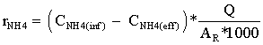
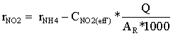
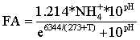

International Journal of Environmental Pollution and Remediation (IJEPR)
ISSN: 1929-2732

Volume 1 - Year 2012 - Pages 20-30
DOI: 10.11159/ijepr.2012.004
The Start-Up of Aerated Submerged Fixed-Bed Biofilm Reactors for Steady State Nitrification
Abdelsalam Elawwad¹, Hisham Abdel-Halim¹, Heinz Koeser²
¹Cairo University, Faculty of Engineering, Department of Public Works
12613 Giza, Egypt
elawwad@cu.edu.eg; hishama.halim2011@gmail.com
²Otto-von-Guericke University Magdeburg, c/o MLU Halle-Wittenberg, UST
D- 06099 Halle/Saale, Germany
heinz.koeser@iw.uni-halle.de
Abstract - The effects of two different start-up regimes on the operation performance and population dynamics of nitrification were evaluated in aerated submerged fixed-bed biofilm reactors (SFBBRs) operated at 20 °C on a medium-strength ammonium wastewater at the bench scale. The reactors were operated in parallel at start-up with two reactors under the maximum nitrogen loading rate condition (NLR) designed for the system, and for the other two reactors, the NLR was increased stepwise over a period of 22 days. The dominant microorganism among the ammonia-oxidising bacteria (AOB) in the seeding sludge was Nitrosomonas oligotropha. There was an observed growth of Nitrosospira and Nitrosomonas europaea/eutropha when the reactors were started up. Nitrosospira vanished during the course of reactor operations, while N. communis was observed to flourish in the second low-load stage of the SFBBR cascade. Nitrospira was the dominant nitrite-oxidising bacteria (NOB) genus present throughout the investigation. Reactors gradually loaded showed higher nitrification rates during the start-up. However, there was no significant difference in the total time required to reach steady state between the two start-up regimes. The AOB required 30 days and the NOB required an additional 8 days on average to reach steady state because NOB development was inhibited by free ammonia (FA). Proposals with respect to pH control, seeding sludge and sludge recycling were developed to shorten the start-up period in SFBBRs. The specific nitrification rates of the attached biomass in SFBBRs were compared to previous studies as well. The results from these experiments will aid in process design.
Keywords: Nitrification, Start-up, Biofilm, SFBBR, AOB, NOB
© Copyright 2015 Authors - This is an Open Access article published under the Creative Commons Attribution License terms. Unrestricted use, distribution, and reproduction in any medium are permitted, provided the original work is properly cited.
1. Introduction
Aerated submerged fixed-bed biofilm reactors (SFBBRs) use sessile bacterial cells that are attached to completely submerged fixed-bed materials for the treatment of wastewater. The plastic support materials have a volumetric void ratio of at least 95 % which allows for uniform distribution of wastewater and air; thus, the SFBBRs are operated like mixed flow reactors. SFBBRs were commercially introduced three decades ago, and the use of this technology has since been established for both municipal and industrial wastewater treatment purposes (Schlegel and Koeser, 2007). Generally, SFFBRs are arranged in series, with two to four stages designed for the entire process. In the first stage, BOD is reduced by heterotrophic bacteria, while autotrophs perform nitrification in the subsequent stages. There is no need for any sludge return. Cold weather will pose a far lower risk of freezing in comparison with treatment plants that use trickling filters or rotating disks.
The start-up of SFBBRs is mostly trouble-free in comparison with the activated sludge process. The most time consuming and critical aspect of the start-up is the nitrification process. Two different groups of bacteria are mainly involved in the nitrification process: ammonia-oxidising bacteria (AOB) and nitrite-oxidising bacteria (NOB), although other types of microorganisms are infrequently found in wastewater treatment processes (e.g., ammonia-oxidizing archaea). Within the Betaproteobacteria class, Nitrosomonas and Nitrosospira are the most frequent genera of AOB species found in wastewater systems. Nitrosomonas are divided into 5 main lineages: N. europaea/eutropha, N. communis, N. oligotropha, N. marina, and N. cryotolerans. NOB species frequently found in wastewater are in the genera Nitrobacter (within the Alphaproteobacteria class) and Nitrospira (within the phylum Nitrospirae) (Koops and Pommerening-Röser, 2001; Daims et al., 2000). Nitrifying bacteria are classified based on their substrate affinities (expressed as Ks values) and maximum reaction rates (Yu et al., 2011). For example, Nitrobacter and N. europaea are classified as r-strategists, as they have a low substrate affinity (higher Ks values) and a high growth rate when the substrate is abundantly present. On the other hand, Nitrospira and Nitrosospira are classified as K-strategists, as they have a high substrate affinity (low Ks values). Therefore, Nitrospira and Nitrosospira should be able to compete more efficiently when substrate concentrations are low. Thus, the concentration of ammonia in the SFBBRs is a factor that determines the abundance of AOB species in the SFBBRs based on their affinities for ammonia (Qin et al., 2008).
During start-up, the nitrifying biofilms is developed slowly compared to heterotrophic organisms. The effluent from the reactor exhibits an unstable water quality because there are inadequate microorganisms to treat the wastewater at steady state (Qin et al., 2008). Free ammonia (FA) and free nitrous acid (FNA) can inhibit the growth of nitrifying bacteria during the start-up (Philips et al., 2002). For high- strength ammonium wastewater, when the nitrogen-loading rate (NLR) is greater than the maximum nitrification rate, it is now widely agreed that start-up of the process should be carried out with a stepwise and controlled increase of the NLR (Jubany et al., 2008). However, there have not been any studies on the effectiveness of such procedures for medium-strength ammonium wastewater (where the NH4+-N content ranges from 50 to 100 mg l-1) in SFBBRs carrying out the nitrification process. Researchers have reported that these reactors take long periods of up to several months just to reach steady state (for example Jubany et al., 2008). However, the length of this period seems to vary based on the different operation conditions that were selected for start-up, as well as the specifics of the treatment processes. To ensure that the least amount of harm is done to aquatic life in the receiving water during the start-up period, the start-up period should be kept as short as possible.
There is currently little information regarding the start-up procedures for SFBBRs available. Therefore, the first objective of this paper is to provide guidance for starting up a new municipal wastewater SFBBR plant. In this respect, the effectiveness of an initial stepwise increase in the NLR is studied for medium-strength wastewaters. The experimental investigation was conducted under controlled laboratory conditions simulating the nitrifying stages of a SFBBR fed with a medium-strength ammonium wastewater, where the NH4+-N is approximately 65 mgN l-1.
2. Materials and Methods
2. 1. Operation of Bench-Scale SFBBRs
For the investigation, four bench-scale SFBBRs were operated in parallel with two identical, completely mixed and aerated stages (see Figure 1). The operating temperature was 20±1 °C. The reactors were numbered from X= 1 to 4. The first stages were labelled as RXa and the second stages as RXb. The total water volume was 36.8 l (a-stage volume = 18.8 l and b-stage volume = 18.0 l).
fiber sheets"Cleartec® Biotextil" (from Cleartec, Marktrodach, Germany) were used as the submerged fixed-bed support material for the nitrifying biofilms. 24 identical PP sheets (total effective surface area = 6.0 m2, 0.25 m2 each sheet) were placed in support frames in each reactor.
The reactors were fed with a synthetic wastewater that was prepared from tap water (as a source of trace elements) mixed with the following substances: 0.25 g l-1 ammonium chloride (NH4Cl) as a source of ammonia, 0.04 g l-1 sodium acetate (CH3COONa) as a carbon source, 0.15 g l-1 disodium phosphate dodecahydrate (Na2HPO4 · 12 H2O) as a phosphorus source, and 0.78 g l-1 of sodium bicarbonate (NaHCO3) which was used as a buffer. The wastewater characteristics and operating parameters are shown in Figure 1. The preparation and pumping of synesthetic wastewater to the reactors was done using by a group of peristaltic pumps. Although a constant concentration of influent is expected, in practice cracks in the pump tubes and clogging caused variations in the flow rates and concentrations of synthetic wastewater in the range of 5-10% over time. The tubes were cleaned regularly, changed when required, to minimize these variations.
The applied NLR was 1.4±0.2 g NH4+-N m-2d-1, which was 80% of the maximum loading rate recommended by the German DWA (Schlegel and Koeser, 2007). For start-up, the reactors supplied with virgin fixed-bed sheets were filled with the synthetic wastewater (initial NH4+-N concentration = 65 mg l-1) and then seeded with an activated sludge from the public wastewater treatment plant (WWTP) of the city of Halle/Germany which utilized an activated sludge process for nutrient removal. The initial mixed liquor suspended solids (MLSS) content was set at 250 mg l-1 in all reactors (sludge volume was 4.7% of the reactor volume). The reactors were operated as batch reactors for the first four days to prevent any seeding sludge from washing out.
During the following days of the start-up period, the batch reactors were converted into continuous flow reactors by initiating a continuous flow of the synthetic wastewater. The reactors were then divided in two groups. The first group (R1 and R2) were started directly with the design NLR; while the second group (R3 and R4) were loaded gradually until the design NLR was reached. The NLR for (R3 and R4) was increased in a stepwise fashion until 22 days after the start-up, when the full design load was applied. The NLR conditions applied during the start-up for both groups are shown in Figure 2. The reactors were operated continuously for 4 months. Ammonia utilization rates (rNH4), as (gNH4+-N m-2d-1) and Nitrite utilization rates (rNO2), as (gNO2--N m-2d-1) were
determined regularly over time for the different reactors, as in Eqs (1) and (2), where (CNH4(inf)) and (CNH4(eff)) is the measured ammonia concentrations as (mgNH4+-N l-1) in influent and effluent, respectively. (CNO2(eff)) is the measured nitrite concentrations as (mgNO2--N l-1) in the effluent. (Q) is the influent flow rate in l d-1 and AR is the surface area of the fixed bed material in m2.
|  | (1) |
|  | (2) |
During start-up, FA concentrations (mgN l-1) in the a- and b-stages were estimated using the measured total ammonia concentrations and pH values according to Eq (3) (Anthonisen et al., 1976), where (T) is the temperature and NH4+ is the total ammonia concentrations (mgN l-1). The FA concentrations in a- and b-stages for the different reactors are shown in Figure 2.
|  | (3) |
2. 2. Microbial and Chemical Analyses
Samples from the attached biomass were taken at days 22, 43, 64 and 100. The FISH technique used rRNA-targeted, fluorescently labelled oligonucleotide probes to determine the predominant NOB species. Samples were immediately fixed by applying freshly prepared 4% paraformaldehyde in phosphate-buffered saline (PBS, with a pH of 7.2) (Sigma-Aldrich, Germany) and stored in a 50% ethanol-PBS solution. Oligonucleotide probes used are EUB for most bacteria, EUB-I for Planctomycetales, EUB-II for Verrucomicrobiales, Ntspa662 & Ntspa662-comp for Nitrospira spp., and NIT3 & NIT3-comp for Nitrobacter spp.. The hybridised samples were investigated using an epifluorescence microscope (Axioskop - Zeiss, Germany) and the Zeiss filter sets No. 15 for Cy3 and No. 9 for fluorescein.
TRFLP based on amoA (a gene region coding for the enzyme ammonia monooxygenase"AMO", present in AOB species) was used to determine the AOB microbial community dynamics according to the protocol described by Horz et al., 2000. DNA samples were extracted using a QIAGEN Tissue Kit (QIAGEN, Germany). PCR amplification of the amoA gene was performed in a Mastercycler (Eppendorf, Germany) using two primers (Rotthauwe et al., 1997) amoA-1F (5'-GGGGTTTCTACTGGTGGT) and amoA-2R (5'- CCCCTCKGSAAAGCCTTCTTC [K = G or T; S = G or C]) labelled with the fluorescent dye HEX and 6-FAM, respectively. PCR products were cleaned up using a QIAquick PCR purification kit (QIAGEN, Germany).
Finally, amoA gene amplicons (491 bp) were digested with the TaqI restriction enzyme at 65 °C overnight (Fermentas GmbH, Germany). The restriction-digestion mixture contained 10 µl of purified PCR product, 1 µl of enzyme buffer, and 1 µl of restriction endonuclease that had 10 U of activity. Digested PCR products, along with a GeneScan-500 ROX size standard (Applied Biosystems, Darmstadt, Germany) were run through an ABI 3100 DNA Sequencer (Applied Biosystems, Darmstadt, Germany).
TRFLP data analyses were carried out with GeneMarker V1.6 (SoftGenetics LLC, Pennsylvania, USA). Peaks were selected by the default parameters setting of the software GeneMarker. Terminal restriction fragment (T-RF) sizes were compared to the recent published T-RFs (Park and Noguera, 2004; Park et al., 2009). Table 1 summarizes the resulting 50'-end and 30'-end TF for the main AOB lineages in Betaproteobacteria. N. marina lineage was neglected in this study. The forward and backward TF sizes sum to 489 bp if only one restriction site exists. A smaller sum indicates several restriction sites. If no restriction site is present, the forward and backward TF were 491 bp. Associations between measured T-RFs and previously reported T-RFs have some limitations and uncertainties. The presence of other lineages that had the same restriction sites or had no restriction sizes could be possible. However, many recent publications were done such associations to identify the different AOB lineages (e.g. Siripong et al., 2007).
The parameters COD, ammonia, nitrite and nitrate were determined spectrophotometrically, in accordance with the standard methods for the examination of water, wastewater and sludge (DIN, 1993).
Table1. Expected TF sizes and their corresponding AOB groups based on TRFLP of amoA gene with TaqI restriction enzyme (Park and Noguera, 2004; Park et al., 2009; Siripong and Rittmann, 2007)
| AOB lineages | F size (bp) Forward/backward |
| Nitrosomonas europaea/eutropha | 219/270 |
| Nitrosomonas oligotropha | 354/48 & 48/441 |
| Nitrosomonas cryotolerans | 491/491 |
| Nitrosomonas communis | 354/135 & 48/135 |
| Nitrosospira | 283/206 |
2.3 Attached Biomass Activities
During the steady state period, the attached solids were obtained at days 58, 73, 90 and 113 after start-up and dried for 24 h at 103 to 105°C for analysis. The sheets were replaced with new ones after the solids were collected. The measured mass of the solids was divided by the effective surface area (0.25 m2) of the sheet to derive the density of the attached solids on the sheet in g m-2. Volatile solids were also measured as g VS m-2 according to DIN/EN. NH4+-N and NO2--N oxidation rates for attached biomass in the a- and b-stages were measured at 20±1 °C in a 4 l aerated mini batch reactor. Two PP textile sheets (SA = 0.5 m2) were placed in the mini reactor to allow the growth of attached biomass. The sheets were returned after the measurement.
To measure biological activity of the attached biomass on the PP sheets, the mini reactors were filled with tap water and 15 to 25 mgN l-1 of nitrite (as NaNO2). Up to six samples were taken over time from the mini reactor to measure nitrite concentrations. In a second step, 15 to 25 mgN l-1 of ammonia (as NH4Cl) was added, and the time development of the ammonia content was measured. The dissolved oxygen concentrations were kept above 6 mg l-1, the pH value ranged between 8.0 and 8.2 during the nitrite oxidation tests and between 7.5 and 8.0 during the ammonia oxidation tests. The oxidation rates were calculated from the slope of the ammonia and nitrite profiles over time as gN m-2d-1. The specific activities as gN per g VS were determined by division with the average measured solid content.
3. Results
The investigation was set up to simulate the nitrification processes in the final stages of a SFBBR. Therefore the synthetic municipal wastewater contained only 30 mg l-1 biodegradable COD. The COD-removal in the first stage of the SFBBRs is a quick process needing only several days to reach steady state after seeding with sludge, based on previous experience with several wastewater and SFBBR treatment plants.
During the first 3 weeks, where there was low activity in the SFBBRs reactors R1 and R2 (full NRL) the pH values were remained consistently between 8.0 and 8.5. On the other hand, reactors R3 and R4 (stepwise NLR) their pH values were dependent on the applied NLR over time (between 7.5 and 8.0). When the reactors reached steady state, the pH values decreased gradually to a consistent value below 7.5 in all reactors and stages. pH values in a- &b-stages during start-up are shown in Figure 3. The oxygen concentration was maintained at 4 to 5 mg l-1 in the a-stages and at 7 to 8 mg l-1 in the b-stages in all reactors over the period of reactor operation. In this way, it could be ensured that oxygen in the bulk liquid was no cause of inhibition for the nitrification processes.
During steady state, the COD in the influent (ranging from 25 to 35 mg l-1) was completely removed in the a-stage of the reactors. The ammonia oxidation in the a-stages was almost two to three times greater than the ammonia oxidation in the b-stages. The difference in the nitrite utilization rates of the a- and b-stages was less pronounced.
3. 1. Performance of SFBBRs
Figures 4 and 5 show the ammonia and nitrite utilization rates of the SFBBRs during the first 50 days after the reactors were started-up, respectively. To define the start and end of the lag-phase, the exponential or log-phase and the stationary phase (Metcalf and Eddy, 2003), appropriate interpolating functions were fitted to the data (Figures 4 and 5). The exponential phase was defined by the best exponential line passing through a set of adjacent points (R2 > 90%). The separated phases in days are then shown in Figures 4 and 5.
The growth of AOB species in reactors R1 and R2 showed a lag period of 9 days (Figure 4a). The ammonia utilization rates were limited during this period to an average value of approximately 0.12 gNH4+-N m-2d-1. The AOB species then experienced exponential growth and required approximately 15 days to reach steady state. The steady state point was defined as the point where the removal efficiency reached 85% of the applied NLR (< 10 mg N l-1).
Nitrite utilization was low during the first month, with an average consumption of 0.12 gNO2--N m-2d-1. The exponential growth of NOB species commenced when the total ammonia was low and the FA (Figure 2a) was almost eliminated on day 30 (Figure 5a). Then the nitrite in the effluent required a further 11 days to reach steady state.
The growth of AOB and NOB species in reactors R3 and R4 experienced a lag period of 8 and 7 days, respectively (Figure 4b and 5b). The ammonia and nitrite utilization rates during this lag period were approximately 0.36 gN m-2d-1 on average each, which was almost three times higher than in the case of R1 and R2. The following stepwise increase of the applied NLR interrupted the increase of ammonia and nitrite utilization rates (Figures 4b and 5b).
Despite the FA concentrations in R3 and R4 (Figure 2b) being most half of that in R1 and R2 (Figure 2a), the growth of AOB species experienced a similar period of lag time before the exponential growth phase began. However, the nitrification rates were higher in R1 and R2 during this lag phase.
The inhibition of NOB growth in R3 and R4 was less in comparison with R1 and R2. The reason for the reduced inhibition was very likely that FA concentrations were lower in R3 and R4 (Figure 2). It can be seen from Figure 5b that lag phases (Lag I, Lag II, Lag III) developed during start-up was associated with increases in FA. Philips et al. (2002) summarized the data from different studies and found that FA concentrations inhibiting NOB growth can vary between 0.02 and 32 mg l-1. FA inhibition of NOB depending on the NOB species present, dissolved oxygen, FNA concentration, and biomass acclimation to FA (Philips et al., 2002).
The high FA concentrations observed during the start-up in (reactors R1 and R2) were a result of the relatively high pH values (> 8.0). These high FA concentrations delayed the growth of the NOB species supplied by the seeding sludge. On the other hand, lower pH values (< 7.0) could have an inhibition effect on AOB because of the formation of FNA (Philips et al., 2002). Anthonisen et al. (1976) reported that nitrification inhibition started at 0.2 mg FNA-N l-1 and nitrification was completely inhibited at 2.6 mg FNA l-1. Therefore, many previous studies controlled pH at 7.5 during start-up especially when treating high strength ammonium wastewaters, to avoid the build-up of FA and FNA.
For medium-strength ammonium wastewaters, one suggestion for improving the growth of NOB during start-up could be the adjustment of the pH to 7.5 during this period. A pH at this level appears to keep the FA below 2 mg l-1 and the FNA below 0.05 mg l-1 for the case of this study. This scheme might speed up NOB growth in conjunction with AOB, thus reducing the build-up of nitrites.
Despite the fact that R3 and R4 (stepwise NLR) showed higher initial ammonia and nitrite utilization rates, their start-up periods to reach steady state were similar to the operation of reactors R1 and R2 (full NLR applied). The AOB required approximately 30 days on average for ammonia removal, while it took approximately 8 days longer for nitrite removal, on average. The results show that the gradual increase of NLR was not significant in shortening the start-up period for a medium-strength ammonium wastewater (NH4+-N ~ 65 mg l-1). This in contrast to studies conducted for high-strength ammonium wastewaters (Jubany et al., 2008).
However, the ammonia and nitrite concentrations in the effluent from R3 and R4 were lower than the effluent from R1 and R2 during the start-up period. In this respect the stepwise procedure is to be preferred when starting a plant, because it puts a smaller burden on the receiving water body.
The start-up time of the nitrification process in the investigated SFBBRs (~ 40 days) is reasonable when compared with previous studies treating ammonium wastewater containing a low C/N ratio. Villaverde et al. (1999) found that the start-up of submerged biofilters treating a medium strength synthetic wastewater (Influent NH4+-N = 100 mgl-1) required 30 to 60 days. Villaverde et al. maintained temperature at 25°C and pH at 7.50 during the start-up period. Jubany et al. (2008) reported 30-100 days of start-up for activated sludge treating high-strength ammonium wastewater (Influent NH4+-N = 2800 mgl-1) and started with a stepwise increase of the NLR. The temperature was maintained temperature at 23°C and pH at 7.50 during the start-up period. Valles-Morales et al. (2004) reported 100 days of start-up for SBR treating high-strength ammonium wastewater (Influent NH4+-N = 620 mgl-1) and started a stepwise increase of the NLR. The temperature was 10-20°C and pH was maintained at 7.50 during the start-up period. The comparison to high-strength ammonium wastewater might not be accurate, because longer start-up periods are expected. However, Jubany et al. (2008) and Valles-Morales et al. (2004) started with a stepwise increase of NLR. Thus, similar start-up periods to medium strength ammonium wastewater are expected because the less inhibition by free ammonia.
During steady state operation, the performance of all reactors operated in parallel was similar. The biofilm in the a-stages was light brown in color and thick, gelatinous and multi-layered, while the biofilm in the b-stages was denser and thinner. The removal efficiency in the a-stages was variable over time, presumably because of the flushing (done weekly in a-stages to remove excess biomass). The average ammonia in the effluent of a- and b-stages was 20.4±11.4 and 1.8±1.6 mg NH4+-N l-1, respectively. The average nitrite in the effluent of a- and b-stages was 8.8±5.5 and 2.4±1.2 mg NO2--N l-1, respectively. Ammonia removal in the a-stages ranged from 65 to 85% and nitrite removal ranged from 40 to 60%.
3.2 Microbial Community Analysis
TRFLP profiles (Electropherograms) for reactor R1 (full NLR) and the reactor R3 (stepwise NLR) are shown in Figure 6 and Figure 7, respectively in a- and b-stages. The profiles show the forward and reverse T-RFs at different dates during the start-up and steady state periods.
For AOB, samples taken from the seeding sludge (from a tertiary WWT with low ammonia concentration in the effluent ~ 1 mg NH4+-N l-1) at day zero showed the dominance of N. oligotropha lineage (F: 48 and R: 441 bp). Other AOB lineages were in low abundance. Qin et al. (2008) stated that N. oligotropha were frequently found in fresh water and wastewater treatment systems with low ammonia concentrations. This bacterium belongs to a cluster of Nitrosomas with a high substrate affinity (low Ks). Consequently, this lineage was out competed by other AOBs more adapted to the higher ammonia concentration present during start-up period.
22 days after start-up, (R1 and R2) was observed to contain two new major lineages in both stages: N. europaea/eutropha (F: 219 and R: 270 bp); and Nitrosospira (F: 283 and R: 206 bp). 43 days from the start, at the end of the start-up period, the abundance of the Nitrosospira lineage was observed to have decreased considerably. N. europaea/eutropha became the dominant bacteria in both the a- and b-stages. After 100 days from the start-up, N. europaea/eutropha observed to be the dominant AOB bacterial lineages in the a-stage with a smaller of N. communis present (F: 48 and R: 135 bp). In b-stage, the abundance of N. communis was approximately equal to that of N. europaea/eutropha.
In reactors (R3 and R4) the N. europaea/eutropha was the dominant AOB lineages 22 days after start-up. At this time, there was also an unknown lineages (F: 206 and R: 252 bp) was present only in the a-stage. N. communis and N. oligotropha appeared only with small abundances. Beyond day 43, N. europaea/eutropha was the dominant AOB in the a- and b-stages. At 100 day, N. communis was of comparable abundance to N. europaea/eutropha in the b-stages.
This observation appears to be in contrast to statements made by previous studies that Nitrosomonas species are r-strategists (affinitive to high ammonia concentrations), while Nitrosospira are K-strategists (Yu et al., 2011). One possible explanation may be that Nitrosospira species present in the investigated SFBBRs could have possessed different physiological properties from those in presented by other researchers or those isolated as pure culture. Some studies showed that the characteristics of ammonia and oxygen affinity could differ for AOB strains in the same AOB lineage (Qin et al., 2008). Qin et al. (2008) suggested that generalization of physiological properties obtained from a limited number of strains in a taxonomic group may not be very accurate.
After 100 days, the ammonia and nitrite concentrations in b-stages were less than 2 mgN l-1 with oxygen concentrations greater 6 mg l-1. At that time N. communis competed with N. europaea/eutropha for the low concentrations of available ammonia in the b-stages. This could suggest that the N. communis lineage in this study have a strong affinity to low ammonia concentrations. This may be notable, because N. communis strains have been shown to possess high Ks values for (14 to 43 uM) as reported by Koops and Pommerening-Röser (2001). However, some authors reported the presence of different N. communis strains in nitrifying biofilms treating low ammonia wastewater (Qin et al., 2008).
Among NOB species, the use of the FISH technique identified the Nitrospira genus as the dominant bacterial species in the seeding sludge and the attached biofilm in all reactors during start-up until the reactors were operating at steady state. Nitrospira species were found mostly in dense clusters. During steady state its presence in comparison to the total bacteria population was higher in the b-stages than the a-stages for all reactors.
According to findings in the literature Nitrospira is more likely to be the dominant species under the conditions of low FA and low FNA concentrations (Blackburne et al., 2007). Blackburne et al. (2007) reported low FA inhibition threshold concentrations for Nitrospira (between 0.04 and 0.08 mg NH3--N l−1), while Nitrobacter was detected at high FA concentration up to 33 mgN l-1. This could explain the observation that any Nitrospira supplied in the seeding sludge to R1 and R2 experienced growth inhibition until the FA concentration in the reactors was negligible (Figure 2a). At this stage Nitrospira grew quickly and the fairly high nitrite concentration at this stage was also consumed quickly (Figure 5a).
Table 2. Nitrification rates in various processes treating ammonium wastewater.
| Technology | Specific Nitrification rate gNH4+-N gVS-1d-1 | Temp. °C | Influent NH4+-N (mg l-1) | COD/N | pH Control | Ref. |
| SFBBRs | 0.19 - 0.34 | 20 | 65-70 | 0.46 | - | This Study |
| Activated Sludge | 0.4 - 0.6 | 23 | 2800 | 0.033 | 7.5 | Jubany et al., 2008 |
| Activated Sludge | 0.10 - 0.37 | 15 - 25 | 4000-6000 | 0.2-0.4 | 7.5 | Carrera et al., 2003 |
| Activated Sludge | 0.60 | 23 | 1000 | - | 7.5 | Campos et al., 2007 |
| Nitrifying Biofilm | 0.38 | 30 | - | 2.0 | 7.5 | van Benthum et al., 1998 |
| Nitrifying Biofilm | 0.14 - 0.18 | 28 - 32 | - | - | - | Arnold et al., 2000 |
| SBR | 0.18 - 0.21 | 28 - 32 | - | - | - | Arnold et al., 2000 |
| SBR | ≈ 0.43 | 25 | 50 - 250 | - | - | Shi et al., 2010 |
In reactors (R3 and R4), the relatively lower ammonia and nitrite concentration at the start-up (Figure 5b) allowed Nitrospira to grow earlier, however growth was interrupted when the ammonia load was increased stepwise. It can be speculated that a seeding sludge containing Nitrospira sp. as well as a higher concentration of Nitrobacter>/ may have resulted in an early commencement of nitrite oxidation. The prevalence of Nitrospira species was expected as it is the most prevalent AOB in most wastewater processes.
3.3 Attached Biomass during Steady State
The solids in SFBBRs were equivalent to a total biomass solids concentration of 1000 mg l-1 in the reactors on average. The results showed that the woven PP fibre sheets in the SFBBRs could obtain coverage of 4 g m-2 (design area) of attached solids on average when the SFBBRs were operated at an NLR of 1.4 gN m-2d-1. As expected, the attached biomass density in the a-stages is significantly higher than in the b-stages.
The specific nitrification rates for AOBs published by some previous studies (Table 2) treating ammonium wastewaters in various systems were in the range of 0.1 to 0.6 g NH4+-N gVS-1 d-1. The specific nitrification rates are affected by C/N ratios, temperature, retention time and NLR. The results from this study at 20°C show the specific nitration rates to range from 0.19 to 0.34 g NH4+-N VS d-1 (Table 2), which are in agreement with the range reported by previous studies.
4. Conclusion
Initial start-up of a two-stage SFFBR, using PP woven sheets as a fixed-bed support, required approximately 30 days to achieve complete ammonia removal. A stepwise increase of the NLR during start-up did not significantly shorten the time required for full nitrification in comparison with full load operation from the start. During start-up, there was a significant change in the AOB community. Finally N. europaea/eutropha was found to be the dominant species at steady state in all reactors. In the low load second stages, N. communis appeared as well.
High FA concentrations inhibited the growth of NOBs during the early stages of the start-up process. Therefore complete nitrite removal required approximately 8 additional days after full ammonium removal was achieved. A pH value of 7.5 would have eliminated the FA inhibition effect on the NOB species. Nitrospira spp. was the dominant NOB species in the seeding sludge up to when the SFBBR started operating at steady state, and no change in the NOB community was observed.
The specific surface area for attaching (volatile) biomass solids onto the woven PP fibre sheets used as a fixed-bed material for the SFBBRs was on average 4 g m-2 (with reference to the design surface area) at steady state. This value suggests that an SFBBR reactor with a volume specific design surface area of 200 m²/m³ would contain approximate 0.8 kg/m³ of attached biomass solids.
The present investigation was operated using a synthetic wastewater at a temperature of 20 °C. It is assumed that start-up at lower operation temperatures will prolong the time required for start-up. On the other hand, the use of real municipal wastewater will continuously feed microorganism to the SFBBRs, which will speed up the development of the biofilm. Future investigations on the start-up performance should concentrate on using real municipal wastewater, lower operating temperatures, the effect of a pH of 7.5, more adapted seeding sludge and sludge recycling.
Acknowledgements
The authors are grateful to Uwe Kappelmeyer, the Helmholtz Centre for Environmental Research (UFZ), Leipzig, Germany for the contributions related to the microbial analytical investigation. The first author thanks the DAAD (the German Academic Exchange Service) for fellowship. The helpful discussions and contributions of Alexander Bahrt, Hendrik Sandner and Siguard Schlegel are acknowledged as well.
References
Anthonisen, A. C., Loehr, R. C., Prakasam, T. B. S., Srinath, E. G. (1976). Inhibition of nitrification by ammonia and nitrous acid. Journal of the Water Pollution Control Federation, 48, 835-852. View Article
Arnold, E., Boehm, B., Wilderer, P. A. (2000). Application of activated sludge and biofilm sequencing batch reactor technology to treat reject water from sludge dewatering systems: a comparison. Water Science and Technology, 41, 115–22. View Article
Blackburne, R., Vadivelu, V. M., Yuan, Z., Keller, J. (2007). Kinetic characterisation of an enriched Nitrospira culture with comparison to Nitrobacter. Water Research, 41, 3033-3042. View Article
Campos, J. L., Garrido, J. M., Mosquera-Corral, A., Mendez, R. (2007). Stability of a nitrifying activated sludge reactor. Biochemical Engineering Journal, 35, 87–92. View Article
Carrera, J., Baeza J.A., Vicent, T., Lafuente, J. (2003). Biological nitrogen removal of high strength ammonia industrial wastewater with two-sludge system. Water Research, 37, 4211-4221. View Article
Daims, H., Nielsen, P. H., Nielsen, J. L., Juretschko, S., Wagner, M. (2000). Novel Nitrospira-like bacteria as dominant nitrite-oxidizers in biofilms from wastewater treatment plants: diversity and in situ physiology. Water Science and Technology, 41, 85-90. View Article
Horz, H. P., Rotthauwe, J. H., Lukow, T., Liesack,W. (2000). Identification of major subgroups of ammonia-oxidizing bacteria in environmental samples by TRFLP analysis of amoA PCR products. Journal of Microbiological Methods, 39, 197-204. View Article
Jubany, I., Carrera, J., Lafuente, J., Baeza, J. A. (2008). Start-up of a nitrification system with automatic control to treat highly concentrated ammonium wastewater: Experimental results and modelling. Chemical Engineering Journal, 144, 407-419. View Article
Koops, H. P., Pommerening-Röser, A. (2001). Distribution and ecophysiology of the nitrifying bacteria emphasizing cultured species. FEMS Microbiology Ecology, 37, 1-9. View Article
Park, H. D., Noguera, D. R. (2004). Evaluating the effect of dissolved oxygen on ammonia-oxidizing bacterial communities in activated sludge. Water Research, 38 (14–15), 3275–3286. View Article
Park, H. D., Lee, S. Y., Hwang, S. (2009). Redundancy analysis demonstration of the relevance of temperature to ammonia-oxidizing bacterial community compositions in a full-scale nitrifying bioreactor treating saline wastewater. Journal of Microbiology and Biotechnology, 19, 346-350. View Article
Philips, S., Laanbroek, H. J., Verstraete, W. (2002). Origin, causes, and effects of increased nitrite concentrations in aquatic environments. Reviews in Environmental Science and Bio/Technology, 1, 115-141. View Article
Qin, Y., Zhang, X., Ren, H., Li, D., Yang, H. (2008). Population dynamics of ammonia-oxidizing bacteria in an aerated submerged biofilm reactor for micropolluted raw water pretreatment. Applied Microbiology and Biotechnology, 79, 135–145. View Article
Rotthauwe, J. H., Witzel, K. P., Liesack, W. (1997).The ammonia monooxygenase structural gene amoA as a functional marker: molecular fine-scale analysis of natural ammoniaoxidizing populations. Applied and Environmental Microbiology , 63, 4704-4712. View Article
Schlegel, S., Koeser, H. (2007). Wastewater treatment with submerged fixed bed biofilm reactor systems - design rules, operating experiences and ongoing developments. Water Science and Technology, 55, 83-89. View Article
Shi, X. Y., Sheng, G.P., Li, X. Y., Yu, H. Q. (2010). Operation of a sequencing batch reactor for cultivating autotrophic nitrifying granules, Bioresource Technolgy, 101, 2960–2964. View Article
Siripong, S., Rittmann, B. E. (2007). Diversity study of nitrifying bacteria in full-scale municipal wastewater treatment plants. Water Research, 41, 1110-1120. View Article
Valles-Morales, M., Mendoza-Roca, J., Bes-Pia, A., Iborra-Clar A. (2004). Nitrogen removal from sludgewater with SBR process: start-up of a full-scale plant in the municipal wastewater treatment plant at Ingolstadt, Germany. Water Science and Technology, 50, 51-58. View Article
van Benthum, W. A. J., Derissen, B. P., van Loosdrecht, M. C. M., Heijnen, J. J. (1998). Nitrogen removal using nitrifying biofilm growth and denitrifying suspended growth in a biofilm airlift suspension reactor coupled with a chemostat. Water Research, 32, 2009-2018. View Article
Villaverde, S., FDZ-Polanco, F., Garcia, P. A. (1999). Nitrifying biofilm acclimation to free ammonia in submerged biofilters. Start-up influence. Water Research, 34, 602-610. View Article
Yu, L., Peng, D., Ren Y. (2011). Protozoan predation on nitrification performance and microbial community during bioaugmentation. Bioresource Technology, 102, 10855-10860. View Article